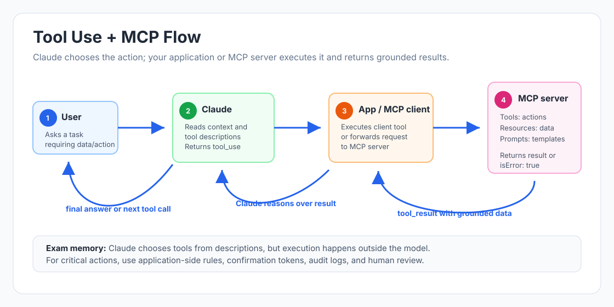

MCP Architecture — Model Context Protocol
Exam: Claude Architect Foundation Chapter: 03 — Tool Use & MCP Difficulty: Intermediate Last Updated: 2026-06
📖 What Is This Topic About?
The Model Context Protocol (MCP) is an open standard that defines how AI models like Claude connect to external tools, data sources, and services. Instead of building custom tool integrations for every service, developers build a single MCP server that Claude can connect to. Understanding MCP architecture, its components, and how to design MCP servers well is a key exam topic.

🧠 Key Concepts
- MCP (Model Context Protocol) — An open standard protocol for connecting AI models to external data and tools, using JSON-RPC over a standardised interface
- MCP Server — A service that exposes tools and/or resources to Claude via the MCP protocol
- MCP Client — The AI system (Claude) that connects to and uses MCP servers
- Tool (in MCP) — A function exposed by the MCP server that Claude can call to perform actions
- Resource (in MCP) — Data that the MCP server exposes as readable content (files, database records, documentation)
- JSON-RPC — The underlying communication format MCP uses; structured request-response messages
- Protocol Error — An MCP-level error for malformed requests (wrong message format, missing required fields)
- Tool Error — An application-level error returned as a tool result with
isError: true
📘 Detailed Explanation
How MCP Fits Into the Architecture
╔══════════════════════════════════════════════════════════════════════╗
║ MCP ARCHITECTURE OVERVIEW ║
╠══════════════════════════════════════════════════════════════════════╣
║ ║
║ ┌─────────────────────────────────────────────────────────────┐ ║
║ │ USER / APPLICATION │ ║
║ └───────────────────────────┬─────────────────────────────────┘ ║
║ │ ║
║ ▼ ║
║ ┌─────────────────────────────────────────────────────────────┐ ║
║ │ CLAUDE (MCP CLIENT) │ ║
║ │ • Connects to one or more MCP servers │ ║
║ │ • Discovers available tools and resources │ ║
║ │ • Calls tools via JSON-RPC │ ║
║ │ • Reads resources to populate context │ ║
║ └────────────┬──────────────────┬──────────────────┬──────────┘ ║
║ │ MCP │ MCP │ MCP ║
║ ▼ ▼ ▼ ║
║ ┌────────────────┐ ┌─────────────────┐ ┌───────────────────┐ ║
║ │ MCP SERVER A │ │ MCP SERVER B │ │ MCP SERVER C │ ║
║ │ (Issue │ │ (Documentation │ │ (Database │ ║
║ │ Tracker) │ │ Wiki) │ │ Explorer) │ ║
║ │ │ │ │ │ │ ║
║ │ Tools: │ │ Tools: │ │ Tools: │ ║
║ │ search_issues │ │ search_docs │ │ run_query │ ║
║ │ get_issue │ │ get_doc │ │ get_schema │ ║
║ │ create_comment│ │ list_spaces │ │ list_databases │ ║
║ │ │ │ │ │ │ ║
║ │ Resources: │ │ Resources: │ │ Resources: │ ║
║ │ issue_catalog │ │ doc_hierarchy │ │ db_schema_map │ ║
║ └────────────────┘ └─────────────────┘ └───────────────────┘ ║
╚══════════════════════════════════════════════════════════════════════╝
Tools vs Resources in MCP
MCP servers expose two types of content:
| Aspect | Tool | Resource |
|---|---|---|
| What it is | An executable function | Readable data/content |
| How it works | Claude calls it with parameters; action happens | Claude reads the content into its context |
| Examples | create_issue(), run_query(), send_message() |
Issue catalog, database schema, documentation hierarchy |
| Side effects | May cause side effects (creates, updates, deletes) | Read-only — no side effects |
| Usage | Claude invokes when it needs to take an action | Claude reads to understand what's available before taking actions |
Why resources matter: Without resources, Claude must make many exploratory tool calls to understand what content each server contains. By exposing a resource like "issue_catalog" (a summary of all issues), Claude can quickly understand the scope before deciding which tools to call. This dramatically reduces unnecessary exploratory calls.
MCP Error Handling — Protocol Errors vs Tool Errors
MCP distinguishes between two types of errors:
PROTOCOL ERROR (JSON-RPC error):
• Triggered by: malformed requests, missing required JSON-RPC fields,
calling methods that don't exist
• Format: JSON-RPC error response (error code + message)
• When to use: The request itself was structurally wrong before any
business logic was reached
{
"jsonrpc": "2.0",
"id": 1,
"error": {
"code": -32602,
"message": "Invalid params: 'user_id' is required but was not provided"
}
}
TOOL ERROR (application-level error):
• Triggered by: business logic failures — user not found, service down,
permission denied, validation failure
• Format: Tool result with isError: true
• When to use: The request was valid, but the application-level operation failed
{
"content": [{"type": "text", "text": "User ID 'usr_99' not found in directory"}],
"isError": true
}
The decision rule:
- Wrong message format / missing JSON-RPC structure → Protocol Error
- Business logic failure (user not found, service unavailable) → Tool Error (isError: true)
Designing MCP Servers for Good Tool Selection
The same principles that apply to standalone tools apply to MCP tools — but MCP adds extra complexity because Claude may be connected to multiple servers simultaneously:
COMMON PROBLEM:
MCP Server: analyze_dependencies — "Analyzes dependency graph"
Built-in: Grep — "Search file contents for a pattern using regular expressions.
Returns matching lines with line numbers and surrounding context."
Claude uses Grep for dependency analysis because its description is more specific.
FIX:
MCP: analyze_dependencies — "Builds a complete dependency graph showing direct
imports, transitive dependencies, and circular dependency cycles. Returns a
structured graph, not raw text matches. Use this instead of Grep for
dependency analysis."
When Claude has both MCP tools and built-in tools, MCP tool descriptions must be at least as specific as built-in tool descriptions to win the selection competition.
🇮🇳 Indian Real-Life Example
Think of MCP like a Universal Power Adapter Standard:
Before universal standards, every country had a different plug shape. Travellers needed dozens of adapters. An international standard means one adapter works everywhere.
MCP is the universal adapter standard for AI tools. Instead of building a custom integration for each AI system, you build one MCP server that any MCP-compatible AI can connect to. Claude connects to your MCP server and immediately knows all the tools and resources available — no custom integration code needed.
Tools = What you can plug into the outlet (actions you can take) Resources = What the outlet's label tells you about its voltage/amperage (information about what's available)
🔑 Exam-Focused Points
- ✅ MCP = open standard protocol for connecting Claude to external tools and data (JSON-RPC)
- ✅ MCP exposes Tools (actions) and Resources (readable data/content)
- ✅ Resources reduce exploratory tool calls by exposing content catalogs upfront
- ✅ Protocol errors = malformed JSON-RPC requests; Tool errors = business logic failures with
isError: true - ✅ MCP tool descriptions must be specific enough to win selection vs built-in tools like Grep
- ✅ Claude can connect to multiple MCP servers simultaneously; description clarity matters more
🧩 Scenario-Based Thinking
Scenario: An MCP server provides a calendar availability tool. Testing reveals three error conditions:
- The request is missing required JSON-RPC fields
- The specified user doesn't exist in the calendar system
- The calendar service is temporarily unavailable (503)
How should each error be reported?
- A) All three as JSON-RPC protocol errors
- B) All three as tool results with
isError: true - C) Malformed request as JSON-RPC protocol error; user-not-found and service unavailable as tool results with
isError: true - D) Malformed request and user-not-found as protocol errors; service unavailable as a tool result
Answer: C
Explanation: Malformed requests (missing required JSON-RPC fields) are structural errors at the protocol level — they should be JSON-RPC protocol errors. User-not-found and service unavailable are application-level failures on otherwise valid requests — they should be tool results with isError: true and appropriate errorCategory metadata.
💡 Memory Tricks
MCP = USB-C for AI: USB-C is a universal connector standard — once a device supports it, any USB-C cable works. MCP is the same — once a service implements MCP, any MCP-compatible AI can connect to it.
Protocol Error = Post Office Won't Accept the Package: The package (request) was addressed incorrectly — missing recipient, wrong format. Rejected before it even reaches the recipient. Tool Error = Package Reached Recipient but Gift Inside Was Broken: The delivery was valid, but the content had a problem. Two different kinds of failure.
❓ Chapter Practice Questions
Q1. An MCP server exposes tools for searching, reading, and listing content across a company's knowledge base. Despite the server being healthy and the tools appearing in the available list, Claude consistently uses its built-in search function instead of the MCP tools. What is the most effective fix?
- A) Remove the built-in search tools when the MCP server is connected
- B) Add routing instructions in the system prompt directing Claude to always use MCP tools for knowledge base queries
- C) Expand MCP tool descriptions to be more specific — detail what data sources are searched, what the output format is, and when to prefer these tools over generic search
- D) Split the MCP search tool into smaller, more granular tools
Answer: C
Explanation: Claude selects tools based on description specificity. A vague MCP tool description loses the selection competition to a detailed built-in tool description. Expanding MCP tool descriptions to clearly explain capabilities, output format, and when to prefer them will improve selection. System prompt routing (B) adds complexity and can conflict with the model's natural reasoning.
Q2. What is the primary benefit of exposing an MCP Resource (such as a content catalog or schema summary) compared to only exposing MCP Tools?
- A) Resources are faster to access than tools
- B) Resources reduce the number of exploratory tool calls by giving Claude upfront visibility into what content each server contains, enabling more targeted tool use
- C) Resources allow Claude to write data back to the server
- D) Resources are required for MCP servers to function properly
Answer: B
Explanation: Without resources, Claude must make multiple exploratory tool calls to discover what content is available (e.g., listing all databases, listing all document spaces). By exposing a resource like a schema map or content hierarchy, Claude can read this overview upfront and immediately make targeted tool calls. This reduces round-trips and context consumption.
Q3. A developer builds a productivity agent connected to three MCP servers: an issue tracker, a documentation wiki, and a database explorer. When engineers ask cross-system questions, the agent makes 8–10 sequential tool calls and exhausts context space. What MCP architectural change best addresses this?
- A) Consolidate all three servers into one unified MCP server
- B) Expose each server's content catalog as MCP resources — issue summaries, documentation hierarchy, database schemas
- C) Add an orchestrator tool that routes questions to one server based on keywords
- D) Add a
prepare_investigationtool to each server
Answer: B
Explanation: The root cause is that Claude must make many exploratory calls to understand what each server contains. Exposing content catalogs as MCP resources gives Claude immediate visibility into all three servers' content — enabling it to plan targeted tool calls rather than exploring blindly. This reduces both the number of tool calls and context consumption.
📌 Quick Revision Summary
- MCP = open protocol (JSON-RPC) connecting Claude to external tools and data sources
- MCP exposes: Tools (actions with side effects) and Resources (readable, no side effects)
- Resources reduce exploratory tool calls by exposing content catalogs upfront
- Protocol errors = malformed JSON-RPC; Tool errors = business logic failures (isError: true)
- MCP tool descriptions must be as specific as built-in tools to win selection
- Claude can connect to multiple MCP servers; description clarity is critical
📎 References
Notes by certification-study-hub. Chapter 03 — MCP Architecture.